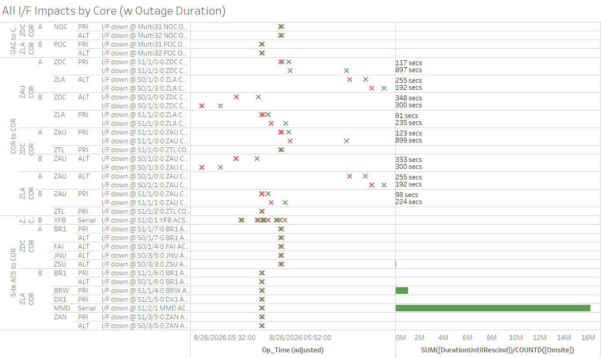
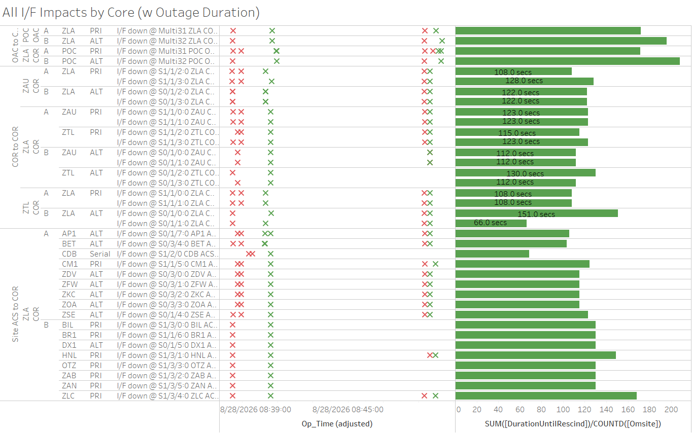
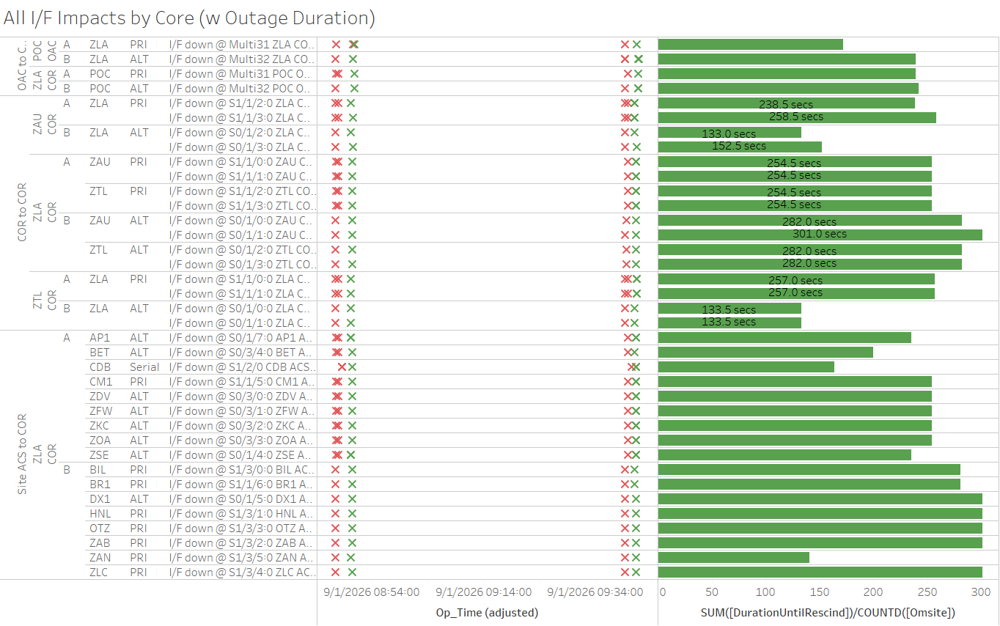

Weekly Highlights 20260826-20260902
SSM-WAAS-065 / DFO-2 Cutover Activities
SSM-WAAS-065 was released on 2/12/26 to upgrade the WAAS subsystems by performing the following hardware changes:
- Remove Legacy PCUs / Replace with new Power Distribution Units (PDUs) and DC Power Supplies (DCPS)
- Remove Legacy KVMs / Replace with new form-fit-function KVM
The DFO-2 Field Test Activities to implement limited operational capability (LOC) of L5 messaging are also being scheduled.
DFO-2 activities will be delayed...
- 8/26 15:23 - SSM-WAAS-065 - ZDV all WREs to Maintenance and Shutdown for upgrade to W7.442L; all WREs restored to Normal at 8/26 20:43
- 9/1 18:03 - SSM-WAAS-065 - BRW all WREs to Maintenance and Shutdown for upgrade to W7.442L; all WREs restored to Normal at 9/1 21:36
4 WRS sites remain
| Target Cutover Date | Site | Site Type | Outage? (Y/N) |
|---|---|---|---|
| 8/26/2026 | ZDV - Denver ARTCC | WRS2 | Y |
| 9/1/2026 | BRW - Barrow FSS | WRS5 | Y |
| 9/15/2026 | HNL - Honolulu AFSS | WRS2 | N |
| 9/30/2026 | MTP - Tapachula | WRS5 | Y |
| 10/2/2026 | MPR - Puerto Vallarta | WRS5 | Y |
| 10/7/2026 | MSD - San Jose Del Cabo | WRS5 | Y |
- We will not take an outage at some WRS sites to avoid service area impacts.
- Final crate to HNL getting address changed to location with forklift support -- Fedex change in progress...
- Beginning coordination to return legacy items from Canada...
| Site | Site Type | Upgrade Start | Upgrade Complete |
|---|---|---|---|
| POC - San Diego TRACON | OM | 2/19/2026 18:54 | 2/19/2026 21:28 |
| ZTL - Atlanta ARTCC | WMS / WCN | 2/19/2026 22:05 | 2/20/2026 2:02 |
| ZLA - Los Angeles ARTCC | WMS / WCN | 2/24/2026 16:24 | 2/24/2026 19:56 |
| ZDC - Washington, D.C. ARTCC | WMS / WCN | 2/26/2026 14:04 | 2/26/2026 19:26 |
| ZAU - Chicago ARTCC | WCN | 3/3/2026 14:15 | 3/3/2026 16:22 |
| NOC - Warrenton ATCSCC | OM | 3/3/2026 16:47 | 3/3/2026 19:21 |
| SZ1 - Santa Paula | SGS | 3/4/2026 17:08 | 3/4/2026 20:59 |
| CM1 - South Mountain | SGS | 3/5/2026 16:45 | 3/6/2026 3:04 |
| AP1 - Napa | SGS | 3/10/2026 15:15 | 3/10/2026 18:27 |
| DX1 - Southbury | SGS | 3/12/2026 13:06 | 3/12/2026 18:33 |
| BR1 - Brewster (S97A) | SGS | 3/25/2026 16:03 | 3/25/2026 21:46 |
| BR2 - Brewster (S97B) | SGS | 3/26/2026 15:54 | 3/26/2026 21:09 |
| ZOA - Oakland ARTCC | WRS2 | 3/31/2026 16:31 | 4/2/2026 18:00 |
| ZMA - Miami ARTCC | WRS2 | 4/2/2026 0:17 | 4/2/2026 5:45 |
| ZLA - Los Angeles ARTCC | WRS2 | 4/14/2026 15:39 | 4/14/2026 20:35 |
| ZNY - New York City ARTCC | WRS2 | 4/15/2026 13:20 | 4/15/2026 17:23 |
| ZFW - Fort Worth ARTCC | WRS2 | 4/23/2026 17:52 | 4/23/2026 22:22 |
| ZBW - Boston ARTCC | WRS2 | 4/28/2026 12:56 | 4/28/2026 19:47 |
| ZAB - Albuquerque ARTCC | WRS2 | 4/29/2026 13:55 | 4/29/2026 18:11 |
| ZMP - Minneapolis ARTCC | WRS2 | 5/6/2026 13:39 | 5/6/2026 18:13 |
| ZSU - San Juan CERAP | WRS2 | 5/12/2026 12:59 | 5/14/2026 14:29 |
| ZHU - Houston ARTCC | WRS2 | 5/27/2026 13:45 | 5/27/2026 17:00 |
| ZAN - Anchorage ARTCC | WRS2 | 5/28/2026 16:43 | 5/28/2026 21:02 |
| ZSE - Seattle ARTCC | WRS2 | 6/2/2026 15:26 | 6/2/2026 18:28 |
| ZKC - Kanas City ARTCC | WRS2 | 6/9/2026 14:05 | 6/9/2026 18:43 |
| ZAU - Chicago ARTCC | WRS2 | 6/10/2026 13:31 | 6/10/2026 17:20 |
| ZJX - Jacksonville ARTCC | WRS2 | 6/16/2026 13:47 | 6/16/2026 19:27 |
| ZOB - Cleveland ARTCC | WRS2 | 6/17/2026 13:40 | 6/17/2026 16:25 |
| OTZ - Kotzebue FSS | WRS5 | 6/23/2026 18:43 | 6/23/2026 20:56 |
| JNU - Juneau AFSS | WRS2 | 6/26/2026 17:02 | 6/26/2026 19:26 |
| ZLC - Salt Lake City ARTCC | WRS2 | 6/30/2026 15:45 | 6/30/2026 18:38 |
| ZDC - Washington, D.C. ARTCC | WRS2 | 7/7/2026 13:38 | 7/7/2026 19:06 |
| ZME - Memphis ARTCC | WRS2 | 7/14/2026 15:03 | 7/14/2026 20:51 |
| YQX - Gander | WRS5 | 7/17/2026 12:02 | 7/17/2026 16:22 |
| YYR - Goosebay | WRS5 | 7/21/2026 13:00 | 7/21/2026 16:17 |
| YFB - Iqaluit | WRS5 | 8/5/2026 01:48 | 8/5/2026 07:22 |
| CDB - Cold Bay FSS | WRS2 | 8/11/2026 17:08 | 8/13/2026 21:42 |
| MMX - Mexico City | WRS5 | 8/13/2026 18:23 | 8/13/2026 22:29 |
| MMD - Merida | WRS5 | 8/18/2026 16:08 | 8/18/2026 20:29 |
| BET - Bethel FCT | WRS5 | 8/18/2026 17:47 | 8/19/2026 00:54 |
| ZTL - Atlanta ARTCC | WRS2 | 8/19/2026 15:47 | 8/19/2026 20:31 |
| FAI - Fairbanks AFSS | WRS5 | 8/21/2026 17:18 | 8/21/2026 21:22 |
| BIL - Billings TRACON | WRS5 | 8/25/2026 15:02 | 8/25/2026 21:02 |
| ZDV - Denver ARTCC | WRS5 | 8/26/2026 15:23 | 8/26/2026 20:43 |
| BRW - Barrow FSS | WRS5 | 9/1/2026 18:03 | 9/1/2026 21:36 |
L1/L2 Bias Alarms
- 8/30 19:51 - MSD L1/L2 Bias Alarm
- 9/1 03:07 - HNL L1/L2 Bias Alarm
8/26 - Comm Event
- 8/26 05:25 - Multiple circuits impacted for
MR-231342 - OPTICAL NETWORK BACKBONE ring transition-- ref LIR 1196102224; last events cleared by 8/26 06:13- 8/26 05:41 - BRW Ring 2 PRI comms momentarily cleared before back down hard...
- 8/26 05:46 - ZSU Ring 1 ALT comms momentarily cleared before back down hard...

8/27 - YWG WRE-B Power Work
- 8/27 02:38 - YWG WRE-B to Maintenance and shutdown for power work -- ref LIR 1201359024
8/28 - ZLA Comm Event / Selected Source Loss
- 8/28 08:38 - Comm event impacting multiple lines
on both ZLA Core Routers; all line
cleared at 8/28 08:40 (~130
seconds)
- BR1 alarmed with SE 511 CV Source Switch ZLA->ZTL concurrent with SE 500 Comm Status Change; CV Source Switched back ZTL->ZLA at 8/28 08:49; both CV Source Switches were UNCOMMANDED
- 8/28 08:49 - Comm event impacting multiple lines on both ZLA Core Routers; all line cleared at 8/28 08:50 (~60 seconds)

8/30 - YFB WRS Subframe Reasonability
- 8/30 15:32 - YFB WRE-B and WRE-C alarmed with SE 728 Subframe Reasonability for all C&Vs
9/1 - ZLA Comm Events / Selected Source Loss
- 9/1 08:47 - Comm event impacting multiple lines on
both ZLA Core Routers; all line cleared
at 9/1 08:50 (~115 seconds)
- BR1 alarmed with SE 511 CV Source Switch ZLA->ZTL concurrent with SE 500 Comm Status Change; CV Source Switched back ZTL->ZLA ~4 seconds later~; both CV Source Switches were UNCOMMANDED
- 9/1 09:39 - Comm event impacting multiple lines on
both ZLA Core Routers; all line cleared
at 9/1 09:41 (~110 seconds)
- BR1 alarmed with SE 511 CV Source Switch ZLA->ZTL concurrent with SE 500 Comm Status Change; CV Source Switched back ZTL->ZLA ~3 seconds later~; both CV Source Switches were UNCOMMANDED

Various Comm Impacts
* Only captures major / long-term comm outages
YFB Comms
- 8/26 05:36 - YFB Ring 2 comms flapping until down hard at 8/26 05:47; line came back up to flapping at 8/26 09:18; last event cleared at 8/26 09:34 (~13712 seconds total)
- 8/27 05:41 - YFB Ring 2 comms flapping until down hard at 8/27 05:52; line came back up to flapping at 8/27 09:34; last event cleared at 8/27 09:46 (~14090 seconds total)
- 8/30 05:37 - YFB Ring 2 comms flapping until down hard at 8/30 05:48; line came back up to flapping at 8/30 09:00; last event cleared at 8/30 09:19 (~12950 seconds total)
- 8/31 05:32 - YFB Ring 2 comms flapping until down hard at 8/31 06:00; line came back up to flapping at 8/31 08:48; last event cleared at 8/31 09:10 (~12520 seconds total)
- 9/1 05:29 - YFB Ring 2 comms flapping until down hard at 9/1 05:56; line came back up to flapping at 9/1 08:53; last event cleared at 9/1 09:14 (~12246 seconds total)
- 9/1 16:01 - YFB Ring 2 comms down hard; line cleared at 9/1 16:22 (~1292 seconds)
- 9/2 05:19 - YFB Ring 2 comms flapping until down hard at 9/2 05:38; line came back up to flapping at 9/2 08:50; last event cleared at 9/2 09:11 (~12670 seconds total)

BET Comms
- 8/26 13:16 - BET Ring 2 PRI comms came back up to flapping (~399291 seconds; down since 8/21); last event cleared at 8/26 13:25
- 8/27 21:04 - BET Ring 1 ALT / Ring 2 PRI comms flapping; both lines cleared at up at 8/28 05:58 (~11424 seconds total)
- 8/28 12:16 - BET Ring 1 ALT / Ring 2 PRI comms flapping; both lines cleared up at 8/28 15:53 (~213 seconds total)
- 8/28 21:40 - BET Ring 1 ALT / Ring 2 PRI comms flapping; both lines cleared up at 8/28 23:54 (~516 seconds total)
CDB Comms
- 8/26 14:14 - CDB Ring 1 comms down hard; line cleared at 8/26 14:23 (~444 seconds)
- 8/29 15:02 - CDB Ring 2 comms down hard; line cleard at 8/29 15:44 (~2531 seconds)
- 8/29 23:53 - CDB Ring 1 comms down hard; line cleared at 8/29 23:58 (~276 seconds)
- 8/31 19:02 - CDB Ring 1 comms flapping; last event cleared at 8/31 19:56 (~2058 seconds total)
OTZ Comms
- 8/27 21:17 - OTZ all comms down hard; all lines cleared at 8/27 23:09 (~6693 seconds)
- 8/29 18:29 - OTZ Ring 1 ALT / Ring 2 PRI + BET Ring 1 ALT / Ring 2 PRI comms down hard; all lines cleared at 8/29 22:24 (~14128 seconds)
Other Sites
- 8/27 15:30 - YQX Ring 1 PRI comms down hard; line cleared at 8/27 17:18 (~6439 seconds)
- 8/27 18:25 - YQX Ring 1 PRI comms down hard; line cleared at 8/27 18:33(~514 seconds)
- 8/28 15:31 - FAI Ring 1 ALT / Ring 2 PRI comms down hard and loopback events...
- 8/28 21:45 - All MX Ring 1 Ethernet comms down hard; all lines cleared at 8/28 11:01 (~47391 seconds)
- 8/30 04:03 - ZBW Ring 1 PRI / Ring 2 ALT comms down hard; both lines cleared at 8/30 06:38 (~9325 seconds)
- 8/30 05:45 - DX1 Ring 1 ALT / Ring 2 PRI comms down hard; both lines cleared at 8/30 07:33 (~6423 seconds)
- 8/30 19:24 - MSD Ring 1 comms flapping until down
hard at 8/30 23:24...
- 8/30 19:51 - MSD L1/L2 Bias Alarm
- 9/2 02:08 - BRW Ring 2 PRI comms came back up to flapping (~1.6 million seconds; down since 8/14); down hard again at 9/2 12:49...
- 9/2 03:24 - BRW Ring 1 ALT comms came back up to flapping (~1.6 million seconds; down since 8/13)...
- 9/2 05:39 - ZNY Ring 1 PRI / Ring 2 ALT comms down hard; both lines cleared at 9/2 06:02 (~1362 seconds)
- 9/2 07:53 - ZLA<->ZTL Ring 1 PRI comms flapping + several other ZLA Ring 1 comms flapped; last events cleared at 9/2 08:34 (~1176 seconds total)

8/22-8/26 BET Ring 2 PRI Comms
0822-0249 ZAU<->BET NET-2 PRI line down
-- ref LIR
1199909724
- 8/21 19:11 - BET Ring 1 ALT / Ring 2
PRI comms flapping...
- 8/21 22:24 - BET Ring 2 PRI comms down hard...
- 8/22 05:38 - BET Ring 1 ALT comms cleared (~1088 seconds total)
- 8/26 13:16 - BET Ring 2 PRI comms came back up to flapping (~399291 seconds; down since 8/21); last event cleared at 8/26 13:25
8/30 MSD Ring 1 Comms
ZTL<>Q9E NET-1 line down. KPEN 578638 A TI. Called AT&T Ticket created 683000336.
-- ref LIR
1203146624
- 8/30 19:24 - MSD Ring 1 comms flapping until down hard at 8/30 23:24...
8/28 FAI Ring 1 ALT / Ring 2 PRI Comms
MR-235916A - GCI to perform a circuit migration
/ ISR 0828-1755 - still down after MR-235916A completed by FTI
-- ref LIR
1487528232
- 8/28 15:31 - FAI Ring 1 ALT / Ring 2 PRI comms down hard and loopback events...
8/25 ZSU Ring 1 ALT / Ring 2 PRI Comms
ISR 0805-2563 --
ref LIR
1193087224
- 8/25 11:57 - ZSU Ring 1 ALT / Ring 2 PRI comms down hard...
8/13 BRW Ring 1 ALT / Ring 2 PRI Comms
- 8/13 10:57 - BRW Ring 1 ALT / Ring 2 PRI
comms flapping...
- 8/13 17:49 - BRW Ring 1 ALT comms down hard -- ref LIR 1472365532...
- 8/14 00:32 - BRW Ring 2 PRI comms down hard -- ref LIR 1472364732...
- 9/2 02:08 - BRW Ring 2 PRI comms came back up to flapping (~1.6 million seconds; down since 8/14); down hard again at 9/2 12:49...
- 9/2 03:24 - BRW Ring 1 ALT comms came back up to flapping (~1.6 million seconds; down since 8/13)...
5/11/23 Mexico Ring 2 Down Hard...
- 5/11/23 17:01 - MX Ring 2 SatCom upgrade begins; MX Ring 2 OFFLINE until upgrade troubleshooting is complete...
- Targeting network upgrade in CY26
- 3/12/26 Disconnect order
List of current offline WREs
List of current offline WREs -- ref WAAS Status Monitor
All Depot shipments to Mexico are halted until the customs process can be finalized
Currently working to assess MX Inventory to determine equipment refresh and restoration needs...
MMX -- WRS OFFLINE
- MMX WRE-B - 7/29/26-... - MMX WRE-B to Maintenance to monitor site RFI -- ref LAD 1456891832
- MMX WRE-C - 8/21/26-... - keeping MMX at one thread while investigating RFI -- ref LIR 1189462124...
MMD -- WRS OFFLINE
- MMD WRE-B - 8/18/26-... - Freq Std failed during SSM-WAAS-065 upgrade...
- MMD WRE-C - 10/20/25-... - Good Freq Std swapped into WRE-A to restore -- ref LIR 211505621
MTP -- WRS OFFLINE
- MTP WRE-A - 9/23/25-...
- PCU Failed after power
outage; PCU-B swapped into WRE-A
but DC output is non-functional... ref LAD
1060696524
- Planning to swap PCU-C into WRE-A -- this will remove WRE-C from service, but allow us to restore WRE-A for analysis
- MTP WRE-B - 11/18/24-... - Receiver inits failing due to no DC Power from PCU; PCU swapped with PCU-A after PCU-A failed -- ref LIR 898330924
MPR
- MPR WRE-B - 5/3/24-... - Inits failing -- looks like a bad freq std; due to shipping issues, there is no spare Freq Std and no ETA to recover WRE-B... -- ref LIR 44170821

Major Events


Core I/F Status

Comm Events

Mexico Comm Status